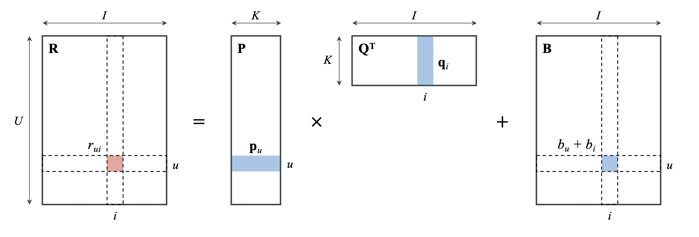

Lenskit: Recommendation
Contents
Lenskit: Recommendation#
import numpy as np
import pandas as pd
from ml_metrics import mapk
from recmetrics import mark, prediction_coverage, personalization, intra_list_similarity
from sklearn.metrics import ndcg_score
from sklearn.metrics import r2_score as R2, mean_squared_error as MSE
from sklearn.preprocessing import MinMaxScaler
from sklearn.metrics.pairwise import cosine_similarity, linear_kernel
from sklearn.ensemble import RandomForestRegressor
from sklearn.model_selection import GridSearchCV
from lenskit import batch, Recommender
from lenskit.algorithms.als import BiasedMF, ImplicitMF
from lenskit.algorithms.funksvd import FunkSVD
from lenskit.algorithms.item_knn import ItemItem
from lenskit.algorithms.user_knn import UserUser
from surprise import Dataset, Reader, accuracy
from surprise import SVD, KNNBasic, KNNWithMeans, KNNWithZScore, KNNBaseline
from surprise.model_selection import cross_validate
pd.options.display.float_format = '{:.3f}'.format
1. Recommendation concepts#
A recommender system or recommendation engine is a program that aims to suggest the most relevant items to each user. With the rise of digital services, recommender systems have taken more and more places in human’s life. Some successful recommender systems are of large companies such as Netflix, Google and Amazon.
1.1. Problem statement#
Approaches#
As seen in familiar services, there are a lot of recommendation kinds such as “similar products”, “best seller products”, “most relevant products” and “people view this also buy this”. Basically, every recommendation problem is some sort of a ranking system, with or without scores; and some ranking problems can be done only by calculating items’ statistics. This section focuses on the most challenging problem, recommendation of most relevant products to a user. Typically, there are two most noticeable recommendation methods:
Collaborative Filtering. This technique tries to discover people that have the same taste as an user \(u\), then recommends to \(u\) items have been highly rated by these people. Imagine there are a lot of people who have watched both “Iron Man” and “Captain America”, then if \(u\) watches one of two movies, the other will be recommended.
Content-based Filtering. This technique draws a picture of the user \(u\)’s behaviours, it suggests items that are similar to what \(u\) has purchased in the past. For example, if \(u\) is a Netflix user and has watched so many fantasy movies, then the engine should recommend to \(u\) a movie also having the fantasy genre.
Demographic Filtering, which identifies people that are demographically similar to a user, then extrapolates from their ratings.
Among the three, Collaborative Filtering is considered the most effective; however, the other approaches still have their own advantages. Therefore, many modern recommender systems use hybridization, which combines two or more methods to gain better performance than individual implementation.
Cold start problem#
This problem refers to the situation where a recommendation system (especially Collaborative Filtering) fails to predict the ratings for new users and new items, as there are insufficient data for the system to work accurately. Fortunately, Content-based Filtering and Demographic Filtering suffer from this problem less than Collaborative Filtering does:
For new users, Demographic Filtering will find existing users that are demographically similar to them
For new items, Content Filtering will find similar items based on item metadata
This explains why hybrid systems are preferred in business and become very successful. Another implementation that can help solve the cold-start problem is to directly ask new users what they do like.
Utility matrix#
In a recommendation system, there are two important entities, being referred to as users and items. Each user has preferences for some of the items, they can be in the form of rating scores (from 1 to 5) or binary status (like/not like). The whole data is represented as a utility matrix, sometimes called user-item matrix, illustrated as below:
item1 |
item2 |
item3 |
item4 |
|
|---|---|---|---|---|
user1 |
5 |
1 |
||
user2 |
3 |
2 |
||
user3 |
5 |
|||
user4 |
4 |
|||
user5 |
4 |
4 |
||
user6 |
2 |
1 |
3 |
Since digital products are designed to serve many people at once, the number of users is usually much larger than the number of items. And as each user only gives ratings to a small number of items, the utility matrix is a sparse matrix most of the time, where most of the entries are null. It is almost impossible to build a recommender system without a utility matrix. There are two ways of collecting data in order to make a utility matrix.
Explicit ratings, which come directly from asking users to rate items. Easy to collect but usually comes with a lot of missing data, since users are lazy. The rating scores are not trustworthy (depending on personal perspective) and are not updated over time.
Implicit ratings, which are inferences from users’ behavior. This method requires to have some sort of unsupervised formula/rule to map a user’s actions to his ratings. Unlike explicit ratings, implicit ratings are much more trustworthy (behaviors are unconscious) and are up to date.
1.2. The dataset#
In this topic, we use the famous MovieLens 100k dataset containing 100,000 ratings from 943 users on 1682 movies.
dfUser = pd.read_csv('../data/movielens/user.csv')
dfUser.head()
| user_id | age | sex | occupation | |
|---|---|---|---|---|
| 0 | 1 | 24 | M | technician |
| 1 | 2 | 53 | F | other |
| 2 | 3 | 23 | M | writer |
| 3 | 4 | 24 | M | technician |
| 4 | 5 | 33 | F | other |
dfItem = pd.read_csv('../data/movielens/item.csv').drop(columns='movie_title')
dfItem = dfItem.astype({'movie_id': str})
dfItem.head()
| movie_id | release_year | action | adventure | animation | children | comedy | crime | documentary | drama | fantasy | noir | horror | musical | mystery | romance | scifi | thriller | war | western | |
|---|---|---|---|---|---|---|---|---|---|---|---|---|---|---|---|---|---|---|---|---|
| 0 | 1 | 1995.000 | 0 | 0 | 1 | 1 | 1 | 0 | 0 | 0 | 0 | 0 | 0 | 0 | 0 | 0 | 0 | 0 | 0 | 0 |
| 1 | 2 | 1995.000 | 1 | 1 | 0 | 0 | 0 | 0 | 0 | 0 | 0 | 0 | 0 | 0 | 0 | 0 | 0 | 1 | 0 | 0 |
| 2 | 3 | 1995.000 | 0 | 0 | 0 | 0 | 0 | 0 | 0 | 0 | 0 | 0 | 0 | 0 | 0 | 0 | 0 | 1 | 0 | 0 |
| 3 | 4 | 1995.000 | 1 | 0 | 0 | 0 | 1 | 0 | 0 | 1 | 0 | 0 | 0 | 0 | 0 | 0 | 0 | 0 | 0 | 0 |
| 4 | 5 | 1995.000 | 0 | 0 | 0 | 0 | 0 | 1 | 0 | 1 | 0 | 0 | 0 | 0 | 0 | 0 | 0 | 1 | 0 | 0 |
dfRatingBase = pd.read_csv('../data/movielens/rating_base.csv')
dfRatingTest = pd.read_csv('../data/movielens/rating_test.csv')
dfRatingBase.head()
| user_id | movie_id | rating | |
|---|---|---|---|
| 0 | 1 | 1 | 5 |
| 1 | 1 | 2 | 3 |
| 2 | 1 | 3 | 4 |
| 3 | 1 | 4 | 3 |
| 4 | 1 | 5 | 3 |
1.3. Evaluation metrics#
Depends on how we build a recommendation system, there are two types of metric can be used to assess its quality. If we have predicted the ratings, then regression metrics, especially RMSE, are usually chosen. This section mainly focuses on metrics that help us evaluate how well we have sorted the recommended items. For illustration purpose, we assess the performance of a simple baseline model run on the MovieLens dataset.
dfRating = pd.read_csv('../data/movielens/rating_base.csv')
dfRating = dfRating.rename(columns={'user_id': 'user', 'movie_id': 'item'})
# fit the Matrix Factorization model
mf = BiasedMF(features=30, iterations=10)
mf = Recommender.adapt(mf)
mf = mf.fit(dfRating)
dfPredict = batch.predict(mf, dfRating)
dfPredict = dfPredict.sort_values(by=['user', 'prediction'], ascending=[True, False])
dfPredict['rank'] = dfPredict.groupby('user').prediction.rank(method='first', ascending=False).astype(int)
dfPredict = dfPredict.astype({'user': str, 'item': str})
dfPredict.head()
| user | item | rating | prediction | rank | |
|---|---|---|---|---|---|
| 162 | 1 | 169 | 5 | 5.020 | 1 |
| 110 | 1 | 114 | 5 | 4.951 | 2 |
| 114 | 1 | 119 | 5 | 4.881 | 3 |
| 96 | 1 | 100 | 5 | 4.878 | 4 |
| 47 | 1 | 50 | 5 | 4.857 | 5 |
AP@K and AR@K#
In a recommendation problem:
Precision is calculated as the ratio between the number of correct recommendations (\(\text{TP}\)) and the number of recommended items (\(\text{TP}+\text{FP}\))
Recall is calculated as the ratio between the number of correct recommendations (\(\text{TP}\)) and the number of actual relevant items (\(\text{TP}+\text{FN}\))
Since our system only has a chance to show a few top products to the customers, thus we consider the first \(k\) items to calculate Precision and Recall, resulting in Precision and Recall at cutoff \(K\) (P@K and R@K). However, these two metrics seem to not care about orders, we would want the metrics to reward for front-loading the relevant items. This is where Average Precision and Average Recall up to the \(K^\text{th}\) item (AP@K and AR@K) is used to tackle the problem. Given \(\text{rel}_k\) indicates the relevance status (\(\text{rel}_k=1\) if the \(k^{th}\) item is relevant), here is the formula for AP@K (AR@K can be calculated the same way):
In this formula, the higher rank a relevant item has, the more times it will appear in the calculation of P@K, and the more value it contributes to AP@K. The example below computes P@K, R@K, AP@K and AR@K for a recommendation of 8 items to a single user.
relevant = [1, 1, 0, 0, 1, 0, 1, 0]
df = pd.DataFrame({'rel': relevant})
df['k'] = np.arange(1, len(relevant)+1)
df['TP'] = df.rel.cumsum()
df['TP+FP'] = df.k
df['TP+FN'] = 5
df['P@k'] = df['TP'] / df['TP+FP']
df['AP@k'] = df['rel'] * df['P@k']
df['AP@k'] = df['AP@k'].cumsum() / df['k']
df['R@k'] = df['TP'] / df['TP+FN']
df['AR@k'] = df['rel'] * df['R@k']
df['AR@k'] = df['AR@k'].cumsum() / df['k']
df
| rel | k | TP | TP+FP | TP+FN | P@k | AP@k | R@k | AR@k | |
|---|---|---|---|---|---|---|---|---|---|
| 0 | 1 | 1 | 1 | 1 | 5 | 1.000 | 1.000 | 0.200 | 0.200 |
| 1 | 1 | 2 | 2 | 2 | 5 | 1.000 | 1.000 | 0.400 | 0.300 |
| 2 | 0 | 3 | 2 | 3 | 5 | 0.667 | 0.667 | 0.400 | 0.200 |
| 3 | 0 | 4 | 2 | 4 | 5 | 0.500 | 0.500 | 0.400 | 0.150 |
| 4 | 1 | 5 | 3 | 5 | 5 | 0.600 | 0.520 | 0.600 | 0.240 |
| 5 | 0 | 6 | 3 | 6 | 5 | 0.500 | 0.433 | 0.600 | 0.200 |
| 6 | 1 | 7 | 4 | 7 | 5 | 0.571 | 0.453 | 0.800 | 0.286 |
| 7 | 0 | 8 | 4 | 8 | 5 | 0.500 | 0.396 | 0.800 | 0.250 |
MAP@K and MAR@K#
Now we have already known AP@K and AR@K is defined for a single user, there should be an aggregation for all available users. This gives us Mean Average Precision/Recall up to cutoff \(K\) (MAP@K and MAR@K), calculated by taking the mean of all AP@K or AR@K. MAR@K seems not very trustworthy since the number of actual relevant items (\(\text{TP}+\text{FN}\)) fluctuates dramatically from user to user, which makes the vector of AR@K have low values and a high variance.
To calculate MAP@K and MAR@K, it is required to have the binary relevance status. Let’s assume if a user rated an item higher than his average rating, that item is considered relevant.
dfRatingMean = dfPredict\
.groupby('user')\
.agg({'rating': 'mean'})\
.reset_index()\
.rename(columns={'rating': 'rating_mean'})
dfRelevant = dfPredict.merge(dfRatingMean, on='user', how='left')
dfRelevant = dfRelevant.query('rating > rating_mean')
dfRelevant = dfRelevant.drop(columns=['rating_mean'])
dfRelevant = dfRelevant.pivot(columns='rank', values='item', index='user')
listRelevant = dfRelevant.values.tolist()
dfRelevant.head(3)
| rank | 1 | 2 | 3 | 4 | 5 | 6 | 7 | 8 | 9 | 10 | ... | 596 | 604 | 605 | 618 | 619 | 632 | 636 | 642 | 657 | 662 |
|---|---|---|---|---|---|---|---|---|---|---|---|---|---|---|---|---|---|---|---|---|---|
| user | |||||||||||||||||||||
| 1 | 169 | 114 | 119 | 100 | 50 | 223 | 12 | 64 | 89 | 48 | ... | NaN | NaN | NaN | NaN | NaN | NaN | NaN | NaN | NaN | NaN |
| 10 | 483 | NaN | 603 | 480 | NaN | 12 | 185 | 50 | 357 | 479 | ... | NaN | NaN | NaN | NaN | NaN | NaN | NaN | NaN | NaN | NaN |
| 100 | 313 | 272 | 316 | 315 | 1235 | 258 | 300 | 691 | 328 | 690 | ... | NaN | NaN | NaN | NaN | NaN | NaN | NaN | NaN | NaN | NaN |
3 rows × 546 columns
dfRecommend = dfPredict.pivot(columns='rank', values='item', index='user')
listRecommend = dfRecommend.values.tolist()
dfRecommend.head(3)
| rank | 1 | 2 | 3 | 4 | 5 | 6 | 7 | 8 | 9 | 10 | ... | 718 | 719 | 720 | 721 | 722 | 723 | 724 | 725 | 726 | 727 |
|---|---|---|---|---|---|---|---|---|---|---|---|---|---|---|---|---|---|---|---|---|---|
| user | |||||||||||||||||||||
| 1 | 169 | 114 | 119 | 100 | 50 | 223 | 12 | 64 | 89 | 48 | ... | NaN | NaN | NaN | NaN | NaN | NaN | NaN | NaN | NaN | NaN |
| 10 | 483 | 64 | 603 | 480 | 98 | 12 | 185 | 50 | 357 | 479 | ... | NaN | NaN | NaN | NaN | NaN | NaN | NaN | NaN | NaN | NaN |
| 100 | 313 | 272 | 316 | 315 | 1235 | 258 | 300 | 691 | 328 | 690 | ... | NaN | NaN | NaN | NaN | NaN | NaN | NaN | NaN | NaN | NaN |
3 rows × 727 columns
from ml_metrics import mapk
mapk(listRelevant, listRecommend, k=5)
0.9686638388123012
from recmetrics import mark
mark(listRelevant, listRecommend, k=5)
0.008870547974471621
nDCG#
Normalized Discounted Cumulative Gain (nDCG) is another popular metric beside MAP@K. Despite having no mean and @K part in the name, NDCG shares the same calculation with MAP@K: computing the metric for a user considering the top \(K\) items, then taking the mean of that metric for all users. The difference is that nDCG defined \(\text{rel}_k\) being the continuous rating score rather than a binary status, hence it contains more information than MAP@K.
The cumulative gain part in nDCG is simply the sum of graded relevance values. We give it ordering information by making each value discounted before summing:
The final step is dividing the metric by the ideal DCG, in order to normalize it ranging from 0 to 1.
dfRelevant = dfPredict.pivot(columns='user', index='rank', values='rating')
dfRelevant = dfRelevant.fillna(0)
dfRelevant.head(3)
| user | 1 | 10 | 100 | 101 | 102 | 103 | 104 | 105 | 106 | 107 | ... | 94 | 940 | 941 | 942 | 943 | 95 | 96 | 97 | 98 | 99 |
|---|---|---|---|---|---|---|---|---|---|---|---|---|---|---|---|---|---|---|---|---|---|
| rank | |||||||||||||||||||||
| 1 | 5.000 | 5.000 | 5.000 | 4.000 | 3.000 | 5.000 | 5.000 | 5.000 | 5.000 | 5.000 | ... | 5.000 | 5.000 | 5.000 | 5.000 | 5.000 | 5.000 | 5.000 | 5.000 | 5.000 | 5.000 |
| 2 | 5.000 | 4.000 | 4.000 | 5.000 | 4.000 | 5.000 | 4.000 | 5.000 | 4.000 | 4.000 | ... | 5.000 | 5.000 | 5.000 | 5.000 | 5.000 | 5.000 | 5.000 | 5.000 | 5.000 | 5.000 |
| 3 | 5.000 | 5.000 | 5.000 | 4.000 | 4.000 | 4.000 | 5.000 | 4.000 | 5.000 | 3.000 | ... | 5.000 | 4.000 | 5.000 | 5.000 | 5.000 | 4.000 | 5.000 | 5.000 | 5.000 | 5.000 |
3 rows × 943 columns
dfRecommend = dfPredict.pivot(columns='user', index='rank', values='prediction')
dfRecommend = dfRecommend.fillna(0)
dfRecommend.head(3)
| user | 1 | 10 | 100 | 101 | 102 | 103 | 104 | 105 | 106 | 107 | ... | 94 | 940 | 941 | 942 | 943 | 95 | 96 | 97 | 98 | 99 |
|---|---|---|---|---|---|---|---|---|---|---|---|---|---|---|---|---|---|---|---|---|---|
| rank | |||||||||||||||||||||
| 1 | 5.020 | 4.827 | 4.284 | 4.118 | 3.557 | 4.258 | 4.173 | 4.580 | 4.686 | 4.491 | ... | 4.829 | 4.487 | 4.900 | 5.034 | 4.761 | 4.617 | 5.080 | 4.858 | 4.600 | 4.924 |
| 2 | 4.951 | 4.778 | 4.193 | 3.920 | 3.536 | 4.245 | 3.978 | 4.455 | 4.504 | 3.359 | ... | 4.828 | 4.217 | 4.510 | 4.853 | 4.575 | 4.567 | 4.759 | 4.808 | 4.438 | 4.774 |
| 3 | 4.881 | 4.723 | 4.186 | 3.883 | 3.469 | 4.065 | 3.916 | 4.016 | 4.375 | 3.037 | ... | 4.809 | 4.162 | 4.459 | 4.821 | 4.571 | 4.540 | 4.755 | 4.667 | 4.400 | 4.677 |
3 rows × 943 columns
from sklearn.metrics import ndcg_score
ndcg_score(dfRelevant, dfRecommend, k=5)
0.9413477823778117
1.4. Utility metrics#
This section does not focus on the accuracy, but on some special aspects of a recommendation system.
Coverage#
Simply calculated by the ratio between the number of unique recommended items and the number of items, Coverage measures the percent of items that the recommedation system is able to recommend. Imagine an engine recommends the most popular items to every user, and another engine recommends completely at random. The first engine will have a Coverage very close to 0, while the Coverage of the second one will be very close to 1. Either of these two cases is good.
listItem = dfRating.item.unique().tolist()
dfRecommend = dfPredict.pivot(columns='rank', values='item', index='user')
dfRecommend = dfRecommend.iloc[:, :5]
listRecommend = dfRecommend.values.tolist()
dfRecommend.head(3)
| rank | 1 | 2 | 3 | 4 | 5 |
|---|---|---|---|---|---|
| user | |||||
| 1 | 169 | 114 | 119 | 100 | 50 |
| 10 | 483 | 64 | 603 | 480 | 98 |
| 100 | 313 | 272 | 316 | 315 | 1235 |
from recmetrics import prediction_coverage
prediction_coverage(listRecommend, listItem) / 100
0.34700000000000003
Personalization#
Personalization is the measure of dissimilarity across users’ recommendation, calculated by subtracting the average cosine similarity of all user’s recommendation pairs from 1. A high value of this metric suggests that recommendations are different, which the recommendation system is highly personalized.
dfRecommend = dfPredict.pivot(columns='rank', values='item', index='user')
dfRecommend = dfRecommend.iloc[:, :5]
listRecommend = dfRecommend.values.tolist()
dfRecommend.head(3)
| rank | 1 | 2 | 3 | 4 | 5 |
|---|---|---|---|---|---|
| user | |||||
| 1 | 169 | 114 | 119 | 100 | 50 |
| 10 | 483 | 64 | 603 | 480 | 98 |
| 100 | 313 | 272 | 316 | 315 | 1235 |
from recmetrics import personalization
personalization(listRecommend)
0.9366335474487395
Intra-list Similarity#
Intra-list Similarity measures how similar the items are in a recommendation list of a user by taking the average cosine similarity. This metric requires item features to calculate the cosine similarity between each item pair.
dfRecommend = dfPredict.pivot(columns='rank', values='item', index='user')
dfRecommend = dfRecommend.iloc[:, :5]
listRecommend = dfRecommend.values.tolist()
dfRecommend.head(3)
| rank | 1 | 2 | 3 | 4 | 5 |
|---|---|---|---|---|---|
| user | |||||
| 1 | 169 | 114 | 119 | 100 | 50 |
| 10 | 483 | 64 | 603 | 480 | 98 |
| 100 | 313 | 272 | 316 | 315 | 1235 |
from recmetrics import intra_list_similarity
intra_list_similarity(listRecommend, dfItem.set_index('movie_id'))
0.9999996064377343
2. Collaborative Filtering#
2.1. Matrix Factorization#
Matrix Factorization is a famous collaborative filtering technique, as popularized by Simon Funk during the Netflix Prize. Note that this algorithm has nothing to do with Singular Value Decomposition (SVD); it is more likely of an SVD-like algorithm. However, the name SVD is still used for this family of methods. Besides, some documents refer to this algorithm as Alternating Least Squares (ALS); this name comes from an iterating method for minimizing the loss function.
Algorithm#
The ultimate goal of the algorithm is to factorize the utility matrix \(\mathbf{R}\in\mathbb{R}^{U\times I}\) (there are total of \(U\) users and \(I\) items) as the product of two low-dimensional matrices: \(\hat{\mathbf{R}}=\mathbf{P}\mathbf{Q}^{\text{T}}\), where \(\mathbf{P}_{U\times K}\) is the user embedding matrix and \(\mathbf{Q}_{I\times K}\) is the item embedding matrix. The idea behind matrix factorization comes from an assumption that there are some kind of latent features (their number gives us the rank \(K\) that satisfies \(K\ll U,I\)) describing the relationship between users and items. Latent features can be thought as usual item features, but they are discovered by the model instead of being labeled manually.
One major problem is that there are biases that appear in real-world applications, which have not been handled yet in the above embedding matrices. For example, a film critic tends to give lower ratings and some items always get higher ratings than average. To capture this, bias terms are introduced, organized in the bias matrix \(\mathbf{B}\) and is added to the product \(\mathbf{P}\mathbf{Q}^{\text{T}}\). Specifically, the rating user \(u\) (\(u=1,2,\dots,U\)) gives to item \(i\) (\(i=1,2,\dots,I\)) is predicted as:
where:
\(\mathbf{p}_u\) is the \(u^{\text{th}}\) row-vector of \(\mathbf{P}\), indicating the ratings user \(u\) gives to latent features
\(\mathbf{q}_i\) is the \(i^{\text{th}}\) row-vector of \(\mathbf{Q}\), representing the value of latent features for item \(i\)
\(b_u\) and \(b_i\) are the biases of user \(u\) and item \(i\); \(b_u+b_i=\mathbf{B}_{ui}\)
\(\mu\) is the average of all ratings
Note that \(\mathbf{p}_u\), \(\mathbf{q}_i\), \(b_u\) and \(b_i\) are only defined when the corresponding user or item is known. To estimate all unknown, we minimize the following loss function:
where \(\lambda\) is the regularization coefficient and \(\|\bullet\|_{\text{F}}\) denotes the Frobenius norm of a matrix. An intuitive illustration of the factorization process is shown below:
{kind=link}
Implementation: Lenskit#
This section implements Lenskit’s Matrix Factorization. The hyperparameters are:
features: the number of latent features (\(k\)), defaults to 30.reg: the regularization coefficient (\(\lambda\)), defaults to 0.1. Can be a tuple with the size of 2 to specify user and item regularization terms separately.
dfRatingBase = pd.read_csv('../data/movielens/rating_base.csv')
dfRatingBase = dfRatingBase.rename(columns={'user_id': 'user', 'movie_id': 'item'})
dfRatingBase.head()
| user | item | rating | |
|---|---|---|---|
| 0 | 1 | 1 | 5 |
| 1 | 1 | 2 | 3 |
| 2 | 1 | 3 | 4 |
| 3 | 1 | 4 | 3 |
| 4 | 1 | 5 | 3 |
mf = BiasedMF(features=30, iterations=10)
mf = Recommender.adapt(mf) # ensure the object to be a Recommender
mf = mf.fit(dfRatingBase) # input columns specified by name: "user", "item" and "rating"
dfRatingTest = pd.read_csv('../data/movielens/rating_test.csv')
dfRatingTest = dfRatingTest.rename(columns={'user_id': 'user', 'movie_id': 'item'})
dfPredict = batch.predict(mf, dfRatingTest)
dfPredict['prediction'] = dfPredict.prediction.fillna(2.5)
dfPredict.head()
| user | item | rating | prediction | |
|---|---|---|---|---|
| 0 | 1 | 20 | 4 | 3.947714 |
| 1 | 1 | 33 | 4 | 3.756196 |
| 2 | 1 | 61 | 4 | 4.045644 |
| 3 | 1 | 117 | 3 | 3.705049 |
| 4 | 1 | 155 | 2 | 2.404567 |
mf.predictor.user_features_.shape
(943, 30)
mf.predictor.item_features_.shape
(1680, 30)
y_test = dfPredict.rating
y_pred = dfPredict.prediction
r2_test = R2(y_test, y_pred)
rmse_test = MSE(y_test, y_pred, squared=False)
print(f'R2 = {r2_test:.2%}')
print(f'RMSE = {rmse_test:.4f}')
R2 = 29.02%
RMSE = 0.9438
Implementation: Surprise#
This section implements Surprise’s Matrix Factorization.
dfRatingBase = pd.read_csv('../data/movielens/rating_base.csv')
dfRatingTest = pd.read_csv('../data/movielens/rating_test.csv')
dfRatingBase.head()
| user_id | movie_id | rating | |
|---|---|---|---|
| 0 | 1 | 1 | 5 |
| 1 | 1 | 2 | 3 |
| 2 | 1 | 3 | 4 |
| 3 | 1 | 4 | 3 |
| 4 | 1 | 5 | 3 |
# convert the train set into Surprise's object
dataTrain = Dataset.load_from_df(dfRatingBase, Reader())
dataTrain = dataTrain.build_full_trainset()
mf = SVD()
mf = mf.fit(dataTrain)
After the model has been trained, we can call four attributes pu, qi, bu and bi to get the value of \(\mathbf{P}\), \(\mathbf{Q}\), user bias and item bias.
mf.pu.shape
(943, 100)
mf.qi.shape
(1680, 100)
mf.bu.shape
(943,)
mf.bi.shape
(1680,)
mf.predict(uid=1, iid=100001)
Prediction(uid=1, iid=100001, r_ui=None, est=3.4044350878268252, details={'was_impossible': False})
data_prediction = mf.test(dfRatingTest.values)
user_id = [i.uid for i in data_prediction]
item_id = [i.iid for i in data_prediction]
rating = [i.r_ui for i in data_prediction]
prediction = [i.est for i in data_prediction]
dfPredict = pd.DataFrame({
'user_id': user_id,
'item_id': item_id,
'rating': rating,
'prediction': prediction
})
dfPredict.head()
| user_id | item_id | rating | prediction | |
|---|---|---|---|---|
| 0 | 1 | 20 | 4 | 3.66 |
| 1 | 1 | 33 | 4 | 3.91 |
| 2 | 1 | 61 | 4 | 3.84 |
| 3 | 1 | 117 | 3 | 3.64 |
| 4 | 1 | 155 | 2 | 2.57 |
y_test = dfPredict.rating
y_pred = dfPredict.prediction
r2_test = R2(y_test, y_pred)
rmse_test = MSE(y_test, y_pred, squared=False)
print(f'R2 = {r2_test:.2%}')
print(f'RMSE = {rmse_test:.4f}')
R2 = 27.94%
RMSE = 0.9509
2.2. K-NN method#
Algorithm#
This method is quite straightforward, it involves in these steps:
Represent each user/item as a vector extracted from the utility matrix. Normalize each vector by subtracting to it the average ratings of that user/item.
Calculate the similarity matrix for all pairs; the cosine distance is used most of the time.
Consider \(K\) nearest neighbors, aggregate their ratings as prediction for the item \(i\) that a user \(u\) has not rated yet.
There are two strategies can be used in the K-NN method: user-based and item-based (some documents refer to them as user-user and item-item). In user-based approach, we try to figure out a maximum of \(K\) users that are most similar to \(u\), and investigate how they have rated \(i\). In contrast, the item-based approach finds \(K\) most similar items to \(i\) that have been rated by \(u\), and investigates how other people think about them. Note that only neighbors with positive similarity are aggregated, since it makes no sense to take into consideration unrelated users/items.
Let’s say \(v\) is one of \(K\) nearest users of \(u\) that have rated \(i\) and \(v\) is positive similar to \(u\) (\(s_{uv}>0\)); \(j\) is one of \(K\) nearest items of \(i\) that have been rated by \(u\) and \(j\) is positive similar to \(i\) (\(s_{ij}>0\)). The prediction formulas are:
User-based:
Item-based:
In practice, the item-based approach is more popular as it computes a much smaller similarity matrix than the user-based approach does. Besides, the item-mean vector used in item-based is more stable than user-mean vector. It does not change too frequently when there are new ratings, because each item is rated by many users.
K-NN is a computational expensive method when there are millions of users and items in real-world problems. A clustering algorithm can be paired with this method, now we calculate the similarity matrix on clusters of users/items instead of individual users/items. This technique can reduce a lot of computations, but you must trade-off some quality for scalability since the input data is now less detailed. There is also another improvement is calculating only the similarity between related users/items, since there are so many pairs having no common items/users.
Aggregating formulas#
There are a couple of methods to estimate \(\hat{r}_{ui}\) from \(K\) neighbors; the formula used in the previous section is the simplest one. Since both user-based and item-based methods share the same idea and behavior, we are going to demonstrate some variants of aggregating formulas for user-based method.
K-NN with means (\(\mu_u\) and \(\mu_v\) denote the rating mean of user \(u\) and \(v\)):
K-NN with standardization (\(\sigma_u\) and \(\sigma_v\) denote the standard deviation of user \(u\) and \(v\)):
K-NN with biases (\(b_u\) and \(b_i\) denote the bias term of user \(u\) and item \(i\); they are predicted using baseline estimation):
Implementation: Lenskit#
This section implements Lenskit’s K-NN Collaborative Filtering.
dfRatingBase = pd.read_csv('../data/movielens/rating_base.csv')
dfRatingBase = dfRatingBase.rename(columns={'user_id': 'user', 'movie_id': 'item'})
dfRatingBase.head()
| user | item | rating | |
|---|---|---|---|
| 0 | 1 | 1 | 5 |
| 1 | 1 | 2 | 3 |
| 2 | 1 | 3 | 4 |
| 3 | 1 | 4 | 3 |
| 4 | 1 | 5 | 3 |
kni = ItemItem(nnbrs=30)
kni = Recommender.adapt(kni) # ensure the object to be a Recommender
kni = kni.fit(dfRatingBase) # input columns specified by name: "user", "item" and "rating"
dfRatingTest = pd.read_csv('../data/movielens/rating_test.csv')
dfRatingTest = dfRatingTest.rename(columns={'user_id': 'user', 'movie_id': 'item'})
dfPredict = batch.predict(kni, dfRatingTest)
dfPredict['prediction'] = dfPredict.prediction.fillna(2.5)
dfPredict.head()
| user | item | rating | prediction | |
|---|---|---|---|---|
| 0 | 1 | 20 | 4 | 3.946739 |
| 1 | 1 | 33 | 4 | 3.725074 |
| 2 | 1 | 61 | 4 | 4.284423 |
| 3 | 1 | 117 | 3 | 3.587154 |
| 4 | 1 | 155 | 2 | 2.811777 |
kni.predictor.item_means_.shape
(1680,)
y_test = dfPredict.rating
y_pred = dfPredict.prediction
r2_test = R2(y_test, y_pred)
rmse_test = MSE(y_test, y_pred, squared=False)
print(f'R2 = {r2_test:.2%}')
print(f'RMSE = {rmse_test:.4f}')
R2 = 30.65%
RMSE = 0.9329
Implementation: Surprise#
In this section we implement Surprise’s K-NN inspired algorithms. The hyperparameters are:
Aggregating strategy, using one of the classes
KNNBasicKNNWithMeansKNNWithZScoreKNNBaselinek: the number of neighbors to consider (\(k\)), defaults to 40.sim_options.user_base: whether to use user-based or item-based approach, defaults to True (user-based).sim_options.name: the similarity metric, defaults to msd (mean squared difference). Other options are cosine, pearson and pearson_baseline.
dfRatingBase = pd.read_csv('../data/movielens/rating_base.csv')
dfRatingTest = pd.read_csv('../data/movielens/rating_test.csv')
dfRatingBase.head()
| user_id | movie_id | rating | |
|---|---|---|---|
| 0 | 1 | 1 | 5 |
| 1 | 1 | 2 | 3 |
| 2 | 1 | 3 | 4 |
| 3 | 1 | 4 | 3 |
| 4 | 1 | 5 | 3 |
# convert the train set into Surprise's object
dataTrain = Dataset.load_from_df(dfRatingBase, Reader())
dataTrain = dataTrain.build_full_trainset()
knn = KNNBasic(k=30, sim_options={'user_base': False, 'name': 'msd'})
knn = knn.fit(dataTrain)
Computing the msd similarity matrix...
Done computing similarity matrix.
data_prediction = knn.test(dfRatingTest.values)
user_id = [i.uid for i in data_prediction]
item_id = [i.iid for i in data_prediction]
rating = [i.r_ui for i in data_prediction]
prediction = [i.est for i in data_prediction]
dfPredict = pd.DataFrame({
'user_id': user_id,
'item_id': item_id,
'rating': rating,
'prediction': prediction
})
dfPredict.head()
| user_id | item_id | rating | prediction | |
|---|---|---|---|---|
| 0 | 1 | 20 | 4 | 3.621755 |
| 1 | 1 | 33 | 4 | 3.663870 |
| 2 | 1 | 61 | 4 | 4.083298 |
| 3 | 1 | 117 | 3 | 3.551694 |
| 4 | 1 | 155 | 2 | 2.832823 |
y_test = dfPredict.rating
y_pred = dfPredict.prediction
r2_test = R2(y_test, y_pred)
rmse_test = MSE(y_test, y_pred, squared=False)
print(f'R2 = {r2_test:.2%}')
print(f'RMSE = {rmse_test:.4f}')
R2 = 21.10%
RMSE = 0.9950
3. Other methods#
3.1. Content Filtering#
The main idea of this approach is to calculate the similarity score between each user - item pair. This is achieved by building vectors for each item and user. Here are the steps involved in this approach:
Gather metadata for building item features. Item features must be transformed to be numerical and must be on the same scale, this prevents some large features from dominating the similarity calculation. A fair way of scaling is to select a scale factor for each feature equals to the inverse of the average.
Center the preference vectors by subtracting each value with the corresponding user’s average rating. The purpose of doing this is to remove any bias from user’s explicit ratings. For example, a movie critic tends to give a movie a lower rating score than normal, he seems to not like most of the movies. Thanks to the centering technique, above-average rating movies show up and are considered to be positively rated.
Build user profiles from their ratings and item features. A user profile demonstrates the ratings he/she gives to each of the item characteristics.
In a content-based system, we take metadata of items and the utility matrix as input. If the utility matrix is made using explicit ratings, we center it by subtracting the mean ratings of users.
dfRatingBase = pd.read_csv('../data/movielens/rating_base.csv')
dfRatingMean = dfRatingBase\
.groupby('user_id')\
.agg({'rating': 'mean'})\
.reset_index()\
.rename(columns={'rating': 'rating_mean'})
dfRatingNorm = dfRatingBase.merge(dfRatingMean, on='user_id', how='left')
dfRatingNorm = dfRatingNorm.eval('rating_norm = rating - rating_mean')
dfRatingNorm = dfRatingNorm.drop(columns=['rating', 'rating_mean'])
dfRatingNorm.head()
| user_id | movie_id | rating_norm | |
|---|---|---|---|
| 0 | 1 | 1 | 1.40 |
| 1 | 1 | 2 | -0.60 |
| 2 | 1 | 3 | 0.40 |
| 3 | 1 | 4 | -0.60 |
| 4 | 1 | 5 | -0.60 |
dfItem = pd.read_csv('../data/movielens/item.csv')
dfItem = dfItem.drop(columns='movie_title')
dfItem = dfItem.fillna(value={'release_year': dfItem.release_year.mode()[0]})
scaler = MinMaxScaler(feature_range=(0,1))
data_scaled = scaler.fit_transform(dfItem.release_year.values.reshape(-1,1))
dfItem = dfItem.assign(release_year=data_scaled)
item_features = dfItem.columns.tolist()[1:]
dfUserProfile = dfRatingNorm.merge(dfItem, on='movie_id', how='left')
for i in item_features:
dfUserProfile[i] = dfUserProfile[i] * dfUserProfile['rating_norm']
dfUserProfile = dfUserProfile.groupby('user_id').mean()[item_features].reset_index()
dfUserProfile.head()
| user_id | release_year | action | adventure | animation | children | comedy | crime | documentary | drama | fantasy | noir | horror | musical | mystery | romance | scifi | thriller | war | western | |
|---|---|---|---|---|---|---|---|---|---|---|---|---|---|---|---|---|---|---|---|---|
| 0 | 1 | -0.01 | -0.08 | -0.11 | -0.01 | -0.13 | -0.05 | -0.02 | 0.02 | 0.13 | -0.00 | 0.01 | -0.01 | -0.03 | -0.00 | 0.05 | 0.06 | 0.00 | 0.01 | 0.00 |
| 1 | 2 | -0.01 | 0.05 | 0.01 | 0.00 | -0.00 | 0.02 | 0.02 | 0.00 | 0.07 | -0.01 | 0.03 | -0.03 | -0.01 | -0.00 | 0.11 | -0.02 | -0.02 | -0.03 | 0.00 |
| 2 | 3 | -0.00 | -0.03 | 0.03 | 0.00 | 0.00 | 0.02 | 0.06 | 0.05 | 0.13 | 0.00 | -0.02 | -0.06 | -0.04 | 0.02 | 0.01 | -0.03 | -0.11 | 0.03 | 0.00 |
| 3 | 4 | 0.01 | -0.30 | -0.29 | 0.00 | 0.00 | 0.09 | 0.07 | 0.05 | 0.14 | 0.00 | 0.00 | 0.00 | 0.05 | -0.01 | -0.10 | -0.15 | -0.15 | -0.03 | 0.00 |
| 4 | 5 | -0.03 | 0.08 | 0.08 | 0.07 | -0.08 | 0.05 | 0.05 | 0.00 | -0.03 | -0.00 | 0.01 | -0.05 | 0.03 | 0.00 | -0.07 | 0.12 | -0.00 | 0.04 | -0.00 |
X = dfUserProfile[item_features]
Y = dfItem[item_features]
similar_matrix = cosine_similarity(X, Y)
dfSimilar = pd.DataFrame(data=similar_matrix, index=dfUserProfile.user_id, columns=dfItem.movie_id)
dfSimilar = dfSimilar.reset_index()
dfSimilar = dfSimilar.rename_axis(None, axis=1)
dfSimilar.head()
| user_id | 1 | 2 | 3 | 4 | 5 | 6 | 7 | 8 | 9 | ... | 1673 | 1674 | 1675 | 1676 | 1677 | 1678 | 1679 | 1680 | 1681 | 1682 | |
|---|---|---|---|---|---|---|---|---|---|---|---|---|---|---|---|---|---|---|---|---|---|
| 0 | 1 | -0.42 | -0.38 | -0.02 | -0.03 | 0.21 | 0.34 | 0.42 | -0.14 | 0.34 | ... | -0.20 | 0.43 | 0.34 | 0.34 | 0.34 | 0.33 | 0.11 | 0.40 | -0.18 | 0.34 |
| 1 | 2 | 0.03 | 0.10 | -0.15 | 0.44 | 0.19 | 0.29 | 0.15 | 0.25 | 0.29 | ... | 0.08 | 0.38 | 0.29 | 0.29 | 0.29 | 0.29 | 0.27 | 0.63 | 0.05 | 0.29 |
| 2 | 3 | 0.04 | -0.25 | -0.36 | 0.29 | 0.21 | 0.45 | 0.28 | 0.36 | 0.45 | ... | -0.37 | 0.55 | 0.44 | 0.44 | 0.44 | 0.44 | -0.27 | 0.38 | 0.06 | 0.44 |
| 3 | 4 | 0.10 | -0.72 | -0.20 | -0.05 | 0.06 | 0.21 | 0.00 | 0.24 | 0.21 | ... | -0.50 | 0.25 | 0.21 | 0.21 | 0.21 | 0.21 | -0.27 | 0.06 | 0.15 | 0.21 |
| 4 | 5 | 0.01 | 0.27 | -0.11 | 0.15 | -0.04 | -0.19 | 0.15 | -0.20 | -0.19 | ... | 0.12 | -0.17 | -0.19 | -0.19 | -0.19 | -0.19 | -0.26 | -0.32 | 0.05 | -0.19 |
5 rows × 1683 columns
thres = 0
dfRelavent = dfSimilar\
.melt(id_vars='user_id', var_name='movie_id', value_name='score')\
.query('score >= @thres')\
.merge(dfRatingBase, how='left')\
.query('rating.isna()', engine='python')\
.drop(columns=['rating'])
dfRelavent.head()
| user_id | movie_id | score | |
|---|---|---|---|
| 1 | 3 | 1 | 0.04 |
| 2 | 4 | 1 | 0.10 |
| 3 | 5 | 1 | 0.01 |
| 4 | 9 | 1 | 0.04 |
| 5 | 12 | 1 | 0.20 |
dfRecommend = dfRelavent\
.sort_values(['user_id', 'score'], ascending=False)\
.groupby('user_id')\
.head(5)\
.groupby('user_id').movie_id\
.apply(list)\
.reset_index(name='recommend')
dfRecommend.head()
| user_id | recommend | |
|---|---|---|
| 0 | 1 | [1542, 617, 429, 1397, 1299] |
| 1 | 2 | [1299, 1050, 131, 207, 197] |
| 2 | 3 | [1122, 1453, 1542, 617, 1397] |
| 3 | 4 | [1456, 1614, 481, 1104, 523] |
| 4 | 5 | [271, 82, 897, 636, 1411] |
user_id = np.random.randint(1, 935)
recommend = dfRecommend.query('user_id==@user_id').recommend.iloc[0]
x = dfUserProfile.query('user_id==@user_id').rename(columns={'user_id': 'id'})
y = dfItem.query('movie_id.isin(@recommend)', engine='python').rename(columns={'movie_id': 'id'})
x.append(y)
| id | release_year | action | adventure | animation | children | comedy | crime | documentary | drama | fantasy | noir | horror | musical | mystery | romance | scifi | thriller | war | western | |
|---|---|---|---|---|---|---|---|---|---|---|---|---|---|---|---|---|---|---|---|---|
| 696 | 697 | -0.01 | -0.03 | -0.02 | 0.01 | -0.00 | 0.00 | -0.03 | -0.03 | 0.11 | -0.01 | 0.00 | -0.04 | -0.00 | 0.03 | 0.12 | 0.04 | -0.05 | 0.03 | 0.00 |
| 130 | 131 | 0.51 | 0.00 | 0.00 | 0.00 | 0.00 | 0.00 | 0.00 | 0.00 | 1.00 | 0.00 | 0.00 | 0.00 | 0.00 | 0.00 | 1.00 | 0.00 | 0.00 | 0.00 | 0.00 |
| 132 | 133 | 0.22 | 0.00 | 0.00 | 0.00 | 0.00 | 0.00 | 0.00 | 0.00 | 1.00 | 0.00 | 0.00 | 0.00 | 0.00 | 0.00 | 1.00 | 0.00 | 0.00 | 1.00 | 0.00 |
| 482 | 483 | 0.26 | 0.00 | 0.00 | 0.00 | 0.00 | 0.00 | 0.00 | 0.00 | 1.00 | 0.00 | 0.00 | 0.00 | 0.00 | 0.00 | 1.00 | 0.00 | 0.00 | 1.00 | 0.00 |
| 1049 | 1050 | 0.33 | 0.00 | 0.00 | 0.00 | 0.00 | 0.00 | 0.00 | 0.00 | 1.00 | 0.00 | 0.00 | 0.00 | 0.00 | 0.00 | 1.00 | 0.00 | 0.00 | 0.00 | 0.00 |
| 1298 | 1299 | 0.25 | 0.00 | 0.00 | 0.00 | 0.00 | 0.00 | 0.00 | 0.00 | 1.00 | 0.00 | 0.00 | 0.00 | 0.00 | 0.00 | 1.00 | 0.00 | 0.00 | 0.00 | 0.00 |
3.2. Demographic Filtering#
3.3. Regression approach#
dfUser = pd.read_csv('../data/movielens/user.csv')
df1 = dfUser.drop(columns=['sex', 'occupation'])
df2 = pd.get_dummies(dfUser.sex, drop_first=True)
df3 = pd.get_dummies(dfUser.occupation, drop_first=True)
dfUserProfile = pd.concat([df1, df2, df3], axis=1)
dfUserProfile.head()
| user_id | age | M | artist | doctor | educator | engineer | entertainment | executive | healthcare | ... | marketing | none | other | programmer | retired | salesman | scientist | student | technician | writer | |
|---|---|---|---|---|---|---|---|---|---|---|---|---|---|---|---|---|---|---|---|---|---|
| 0 | 1 | 24 | 1 | 0 | 0 | 0 | 0 | 0 | 0 | 0 | ... | 0 | 0 | 0 | 0 | 0 | 0 | 0 | 0 | 1 | 0 |
| 1 | 2 | 53 | 0 | 0 | 0 | 0 | 0 | 0 | 0 | 0 | ... | 0 | 0 | 1 | 0 | 0 | 0 | 0 | 0 | 0 | 0 |
| 2 | 3 | 23 | 1 | 0 | 0 | 0 | 0 | 0 | 0 | 0 | ... | 0 | 0 | 0 | 0 | 0 | 0 | 0 | 0 | 0 | 1 |
| 3 | 4 | 24 | 1 | 0 | 0 | 0 | 0 | 0 | 0 | 0 | ... | 0 | 0 | 0 | 0 | 0 | 0 | 0 | 0 | 1 | 0 |
| 4 | 5 | 33 | 0 | 0 | 0 | 0 | 0 | 0 | 0 | 0 | ... | 0 | 0 | 1 | 0 | 0 | 0 | 0 | 0 | 0 | 0 |
5 rows × 23 columns
dfItem = pd.read_csv('../data/movielens/item.csv')
dfItem = dfItem.drop(columns='movie_title')
dfItem = dfItem.fillna(value={'release_year': dfItem.release_year.mode()[0]})
scaler = MinMaxScaler(feature_range=(0,1))
data_scaled = scaler.fit_transform(dfItem.release_year.values.reshape(-1,1))
dfItem = dfItem.assign(release_year=data_scaled)
dfTrain = dfRatingBase\
.merge(dfUserProfile, how='left', on='user_id')\
.merge(dfItem, how='left', on='movie_id')\
.drop(columns=['user_id', 'movie_id'])
dfTest = dfRatingTest\
.merge(dfUserProfile, how='left', on='user_id')\
.merge(dfItem, how='left', on='movie_id')\
.drop(columns=['user_id', 'movie_id'])
X_train = dfTrain.iloc[:, 1:]
X_test = dfTest.iloc[:, 1:]
y_train = dfTrain.rating
y_test = dfTest.rating
params = {
'n_estimators': [100],
'min_samples_leaf': [5],
'max_features': [0.6],
'max_samples': [0.6]
}
rf = GridSearchCV(RandomForestRegressor(), params, cv=2).fit(X_train, y_train)
y_pred = rf.predict(X_test)
r2_test = R2(y_test, y_pred)
rmse_test = MSE(y_test, y_pred, squared=False)
print(f'R2 = {r2_test:.2%}')
print(f'RMSE = {rmse_test:.4f}')
R2 = 13.90%
RMSE = 1.0394
X_test.shape
(9430, 41)
y_test.shape
(9430,)